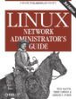

Deprecated Linux networking commands and their replacements
In my article detailing the command line utilities available for configuring and troubleshooting network properties on Windows and Linux, I mentioned some Linux tools that, while still included and functional in many Linux distributions, are actually considered deprecated and therefore should be phased out in favor of more modern replacements.
Specifically, the deprecated Linux networking commands in question are: arp, ifconfig, iptunnel, iwconfig, nameif, netstat, and route. These programs (except iwconfig) are included in the net-tools package that has been unmaintained for years. The functionality provided by several of these utilities has been reproduced and improved in the new iproute2 suite, primarily by using its new ip command. The iproute2 software code is available from Kernel.org. Iproute2 documentation is available from the Linux Foundation and PolicyRouting.org.
Deprecated command |
Replacement command(s) |
|---|---|
| arp | ip n (ip neighbor) |
| ifconfig | ip a (ip addr), ip link, ip -s (ip -stats) |
| iptunnel | ip tunnel |
| iwconfig | iw |
| nameif | ip link, ifrename |
| netstat | ss, ip route (for netstat-r), ip -s link (for netstat -i), ip maddr (for netstat-g) |
| route | ip r (ip route) |
.
Now let’s take a closer look at these deprecated commands and their replacements.
This article will not focus on iproute2 or the ip command in detail; instead it will simply give one-to-one mappings between the deprecated commands and their new counterparts. For replacement commands that are listed as ‘not apparent’, please contact me if you know otherwise.
Jump to:
Please note that nslookup and dig are covered separately here.
Arp
Deprecated arp commands |
Replacement |
|---|---|
arp -a [host] or --all [host]. Shows the entries of the specified host name or IP address. If the [host] parameter is not used, all entries will be displayed. |
ip n (or ip neighbor), or ip n show |
arp -d [ip_addr] or --delete [ip_addr]. Removes the ARP cache entry for the specified host. |
ip n del [ip_addr] (this “invalidates” neighbor entries) . ip n f [ip_addr] (or ip n flush [ip_addr]) |
arp -D or --use-device. Uses the hardware address associated with the specified interface. |
Not apparent |
| arp -e . Shows the entries in default (Linux) style. |
Not apparent |
arp -f [filename] or --file [filename]. Similar to the -s option, only this time the address info is taken from the file that [filename] set up. If no [filename] is specified, /etc/ethers is used as default. |
Not apparent |
arp -H or --hw-type [type] or -t [type]. When setting or reading the ARP cache, this optional parameter tells arp which class of entries it should check for. The default value of this parameter is ether (i.e. hardware code 0x01 for IEEE 802.3 10Mbps Ethernet). |
Not apparent |
arp -i [int] or --device [int]. Selects an interface. When dumping the ARP cache only entries matching the specified interface will be printed. For example, arp -i eth0 -s 10.21.31.41 A321.ABCF.321A creates a static ARP entry associating IP address 10.21.31.41 with MAC address A321.ABCF.321A on eth0. |
ip n [add | chg | del | repl] dev [name] |
arp -n or --numeric. Shows IP addresses instead of trying to determine domain names. |
Not apparent |
arp -s [ip_addr] [hw_addr] or --set [ip_addr]. Manually creates a static ARP address mapping entry for host [ip_addr] with the hardware address set to [hw_addr]. |
ip n add [ip_addr] lladdr [mac_address] dev [device] nud [nud_state] (see example below) |
| arp -v . Uses verbose mode to provide more details. |
ip -s n (or ip -stats n) |
.
Some ip neighbor examples are as follows:
# ip n del 10.1.2.3 dev eth0
Invalidates the ARP cache entry for host 10.1.2.3 on device eth0.
# ip neighbor show dev eth0
Shows the ARP cache for interface eth0.
# ip n add 10.1.2.3 lladdr 1:2:3:4:5:6 dev eth0 nud perm
Adds a “permanent” ARP cache entry for host 10.1.2.3 device eth0. The Neighbor Unreachability Detection (nud) state can be one of the following:
- noarp – entry is valid. No attempts to validate this entry will be made but it can be removed when its lifetime expires.
- permanent – entry is valid forever and can be only be removed administratively.
- reachable – entry is valid until the reachability timeout expires.
- stale – entry is valid but suspicious.
Ifconfig
Deprecated ifconfig commands
|
Replacement |
|---|---|
| ifconfig . Displays details on all network interfaces. |
ip a (or ip addr) |
| ifconfig [interface] . The name of the interface. This is usually a driver name followed by a unit number; for example, eth0 for the first Ethernet interface. Eth0 will usually be a PC’s primary network interface card (NIC). |
ip a show dev [interface] |
| ifconfig [address_family] . To enable the interpretation of differing naming schemes used by various protocols, [address_family] is used for decoding and displaying all protocol addresses. Currently supported address families include inet (TCP/IP, default), inet6 (IPv6), ax25 (AMPR Packet Radio), ddp (Appletalk Phase 2), ipx (Novell IPX) and netrom (AMPR Packet radio). |
ip -f [family] a . [family] can be inet (IPv4), inet6 (IPv6), or link. Additionally, -4 = -f inet and -6 = -f inet6. |
| ifconfig [interface] add [address/prefixlength . Adds an IPv6 address to the [interface]. |
ip a add [ip_addr/mask] dev [interface] |
| ifconfig [interface] address [address] . Assigns the specified IP [address] to the specified [interface]. |
ip a add [ip_addr/mask] dev [interface] |
| ifconfig [interface] allmulti or -allmulti . Enables or disables all-multicast mode. If selected, all multicast packets on the network will be received by the [interface] specified. This enables or disables the sending of incoming frames to the kernel’s network layer. |
ip mr iif [name] or ip mroute iif [name], where [name] is the interface on which multicast packets are received. |
| ifconfig [interface] arp or -arp . Enables or disables the use of the ARP protocol on this [interface]. |
ip link set arp on or arp off |
| ifconfig [interface] broadcast [address] . Specifies the address to use to use for broadcast transmissions. By default, the broadcast address for a subnet is the IP address with all ones in the host portion of the subnet address (i.e., a.b.c.255 for a /24 subnet). |
ip a add broadcast [ip_address] . ip link set dev [interface] broadcast [mac_address] (sets the link layer broadcast address) |
| ifconfig [interface] del [address/prefixlength] . Removes an IPv6 address from the [interface], such as eth0. |
ip a del [ipv6_addr or ipv4_addr] dev [interface] |
| ifconfig [interface] down . Disables the [interface], such as eth0. |
ip link set dev [interface] down |
| ifconfig [interface] hw [class] [address] . Sets the hardware (MAC) address of this [interface], if the device driver supports this operation. The keyword must be followed by the name of the hardware [class] and the printable ASCII equivalent of the hardware address. Hardware classes currently supported include ether (Ethernet), ax25 (AMPR AX.25), ARCnet and netrom (AMPR NET/ROM). |
ip link set dev [interface] address [mac_addr] |
| ifconfig [interface] io_addr [address] . Sets the start [address] in I/O space for this device. |
Not apparent; possibly ethtool. |
| ifconfig [interface] irq [address] . Sets the interrupt line used by the network interface. |
Not apparent; possibly ethtool. |
| ifconfig [interface] mem_start [address] . Sets the start address for shared memory of the interface. |
Not apparent; possibly ethtool. |
| ifconfig [interface] media [type] . Sets physical port or medium type. Examples of [type] are 10baseT, 10base2, and AUI. A [type] value of auto will tell the interface driver to automatically determine the media type (driver support for this command varies). |
Not apparent; possibly ethtool. |
| ifconfig [interface] mtu [n] . Sets the Maximum Transfer Unit (MTU) of an interface to [n]. |
ip link set dev [interface] mtu [n] |
| ifconfig [interface] multicast . Sets the multicast flag on the interface (should not normally be needed as the drivers set the flag correctly themselves). |
ip link set dev [interface] multicast on or off |
| ifconfig [interface] netmask [mask_address] . Sets the subnet mask (not the IP address) for this [interface]. This value defaults to the standard Class A, B, or C subnet masks (based on the interface IP address) but can be changed with this command. |
Not apparent |
| ifconfig [interface] pointopoint or -pointopoint . Enables or disables point-to-point mode on this [interface]. |
not apparent; possibly ipppd [device]. The command ip a add peer [address] specifies the address of the remote endpoint for point-to-point interfaces. |
| ifconfig [interface] promisc or -promisc . Enables or disables promiscuous mode on the [interface]. |
ip link set dev [interface] promisc on or off |
| ifconfig [interface] txquelen [n] . Sets the transmit queue length on the [interface]. Smaller values are recommended for connections with high latency (i.e., dial-up modems, ISDN, etc). |
ip link set dev [interface] txqueuelen [n] or txqlen [n] |
| ifconfig [interface] tunnel [address] . Creates a Simple Internet Transition (IPv6-in-IPv4) device which tunnels to the IPv4 [address] provided. |
ip tunnel mode sit (other possible modes are ipip and gre). |
| ifconfig [interface] up . Activates (enables) the [interface] specified. |
ip link set [interface] up |
.
Some examples illustrating the ip command are as follows; using the table above you should be able to figure out what they do.
# ip link show dev eth0
# ip a add 10.11.12.13/8 dev eth0
# ip link set dev eth0 up
# ip link set dev eth0 mtu 1500
# ip link set dev eth0 address 00:70:b7:d6:cd:ef
Iptunnel
Deprecated iptunnel commands |
Replacement
|
|---|---|
| iptunnel [add | change | del | show] | ip tunnel a or add ip tunnel chg or change ip tunnel d or del ip tunnel ls or show |
| iptunnel add [name] [mode {ipip | gre | sit} ] remote [remote_addr] local [local_addr] | ip tunnel add [name] [mode {ipip | gre | sit | isatap | ip6in6 | ipip6 | any }] remote [remote_addr] local [local_addr] |
iptunnel -V or --version |
not apparent |
.
The syntax between iptunnel and ip tunnel is very similar as these examples show.
# [iptunnel | ip tunnel] add ipip-tunl1 mode ipip remote 83.240.67.86 (ipip-tunl1 is the name of the tunnel, 83.240.67.86 is the IP address of the remote endpoint).
# [iptunnel | ip tunnel] add ipi-tunl2 mode ipip remote 104.137.4.160 local 104.137.4.150 ttl 1
# [iptunnel | ip tunnel] add gre-tunl1 mode gre remote 192.168.22.17 local 192.168.10.21 ttl 255
Iptunnel is covered in more depth here.
Iwconfig
Iwconfig’s successor, iw, is still in development. Official documentation for iw is available here and here.
Deprecated iwconfig commands |
Replacement |
|---|---|
| iwconfig . Displays basic details about wireless interfaces, such as supported protocols (802.11a/b/g/n), Extended Service Set ID (ESSID), mode, and access point. To view these details about a particular interface, use iwconfig [interface] where the interface is the device name, such as wlan0. |
iw dev [interface] link |
| iwconfig [interface] ap [address] . Forces the wireless adapter to register with the access point given by the [address], if possible. This address is the cell identity of the access point (as reported by wireless scanning) which may be different from its MAC address. |
Not apparent |
| iwconfig commit . Some wireless adapters may not apply changes immediately (they may wait to aggregate the changes, or apply them only when the card is brought up via ifconfig). This command (when available) forces the adapter to immediately apply all pending changes. |
Not apparent |
| iwconfig [interface] essid [name] . Connects to the WLAN with the ESSID [name] provided. With some wireless adapters, you can disable the ESSID checking (ESSID promiscuous) with off or any (and on to re-enable it). |
iw [interface] connect [name] |
| iwconfig [interface] frag [num] . Sets the maximum fragment size which is always lower than the maximum packet size. This parameter may also control Frame Bursting available on some wireless adapters (the ability to send multiple IP packets together). This mechanism would be enabled if the fragment size is larger than the maximum packet size. Other valid frag parameters to auto, on, and off. |
Not apparent |
| iwconfig [interface] [freq | channel] . Sets the operating frequency or channel on the wireless device. A value below 1000 indicates a channel number, a value greater than 1000 is a frequency in Hz. You can append the suffix k, M or G to the value (for example, “2.46G” for 2.46 GHz frequency). You may also use off or auto to let the adapter pick up the best channel (when supported). |
iw dev [interface] set freq [freq] [HT20|HT40+|HT40-] . iw dev [interface] set channel [chan] [HT20|HT40+|HT40-] |
| iwconfig [interface] key [key] [mode] [on | off] . To set the current encryption [key], just enter the key in hex digits as XXXX-XXXX-XXXX-XXXX or XXXXXXXX. You can also enter the key as an ASCII string by using the s: prefix. On and off re=enable and disable encryption. The security mode may be open or restricted, and its meaning depends on the card used. With most cards, in open mode no authentication is used and the card may also accept non-encrypted sessions, whereas in restricted mode only encrypted sessions are accepted and the card will use authentication if available. |
iw [interface] connect [name] keys [key] (for WEP) . To connect to an AP with WPA or WPA2 encryption, you must use wpa_supplicant. |
| iwconfig [interface] mode [mode] . Sets the operating mode of the wireless device. The [mode] can be Ad-Hoc, Auto, Managed, Master, Monitor, Repeater, or Secondary. . Ad-Hoc: the network is composed of only one cell and without an access point. Managed: the wireless node connects to a network composed of many access points, with roaming. Master: the wireless node is the synchronization master, or it acts as an access point. Monitor: the wireless node is not associated with any cell and passively monitors all packets on the frequency. Repeater: the wireless node forwards packets between other wireless nodes. Secondary: the wireless node acts as a backup master/repeater. |
Not apparent |
| iwconfig [interface] modu [modulation] . Forces the wireless adapter to use a specific set of modulations. Modern adapters support various modulations, such as 802.11b or 802.11g. The list of available modulations depends on the adapter/driver and can be displayed using iwlist modulation. Some options are 11g, CCK OFDMa, and auto. |
Not apparent |
| iwconfig [interface] nick [name] . Sets the nick name (or station name). |
Not apparent |
| iwconfig [interface] nwid [name] . Sets the Network ID for the WLAN. This parameter is only used for pre-802.11 hardware as the 802.11 protocol uses the ESSID and access point address for this function. With some wireless adapters, you can disable the Network ID checking (NWID promiscuous) with off (and on to re-enable it). |
Not apparent |
| iwconfig [interface] power [option] iwconfig [interface] power min | max [secondsu | secondsm] iwconfig [interface] power mode [mode] iwconfig [interface] power on | off . Configures the power management scheme and mode. Valid [options] are: period [value] (sets the period between wake ups), timeout [value] (sets the timeout before going back to sleep), saving [value] (sets the generic level of power saving). The min and max modifiers are in seconds by default, but append the suffices m or u to specify values in milliseconds or microseconds. Valid [mode] options are: all (receive all packets), unicast (receive unicast packets only, discard multicast and broadcast) and multicast (receive multicast and broadcast only, discard unicast packets). On and off re-enable or disable power management. |
Not apparent; some power commands are: . iw dev [interface] set power_save on . iw dev [interface] get power_save |
| iwconfig [interface] rate/bit [rate] . Sets the bit rate in bits per second for cards supporting multiple bit rates. The bit-rate is the speed at which bits are transmitted over the medium, the user speed of the link is lower due to medium sharing and various overhead.Suffixes k, M or G can be added to the numeric [rate] (decimal multiplier : 10^3, 10^6 and 10^9 b/s), or add ‘0‘ for enough. The [rate] can also be auto to select automatic bit-rate mode (fallback to lower rate on noisy channels), or fixed to revert back to fixed setting. If you specify a bit-rate numeric value and append auto, the driver will use all bit-rates lower and equal than this value. |
iw [interface] set bitrates legacy-2.4 12 18 24 |
| iwconfig [interface] retry [option] [value] . To set the maximum number of retries (MAC retransmissions), enter limit [value]. To set the maximum length of time the MAC should retry, enter lifetime [value]. By default, this value is in seconds; append the suffices m or u to specify values in milliseconds or microseconds. You can also add the short, long, min and max modifiers. |
Not apparent |
| iwconfig [interface] rts [threshold] . Sets the size of the smallest packet for which the node sends RTS; a value equal to the maximum packet size disables the mechanism. You may also set the threshold parameter to auto, fixed or off. |
Not apparent |
| iwconfig [interface] sens [threshold] . Sets the sensitivity threshold (defines how sensitive the wireless adapter is to poor operating conditions such as low signal, signal interference, etc). Modern adapter designs seem to control these thresholds automatically. |
Not apparent |
| iwconfig [interface] txpower [value] . For adapters supporting multiple transmit powers, this sets the transmit power in dBm. If W is the power in Watt, the power in dBm is P = 30 + 10.log(W). If the [value] is postfixed by mW, it will be automatically converted to dBm. In addition, on and off enable and disable the radio, and auto and fixed enable and disable power control (if those features are available). |
iw dev [interface] set txpower [auto | fixed | |limit] [tx power in mBm] . iw phy [phyname] set txpower [auto | fixed | limit] [tx power in mBm] |
iwconfig --help. Displays the iwconfig help message. |
iw help |
iwconfig --version. Displays the version of iwconfig installed. |
iw --version |
.
Some examples of the iw command syntax are as follows.
# iw dev wlan0 link (for WEP)
# iw wlan0 connect CoffeeShopWLAN
# iw wlan0 connect HomeWLAN keys 0:abcde d:1:0011223344
Nameif
Deprecated nameif commands |
Replacement |
|---|---|
| nameif [name] [mac_address] . If no name and MAC address are provided, it attempts to read addresses from /etc/mactab. Each line of mactab should contain an interface name and MAC address (or comments starting with #). |
ip link set dev [interface] name [name] . ifrename -i [interface] -n [newname] |
| nameif -c [config_file] . Reads from [config_file] instead of /etc/mactab. |
ifrename -c [config_file] |
| nameif -s . Error messages are sent to the syslog. |
Not apparent |
Netstat
Deprecated netstat commands |
Replacement |
|---|---|
netstat -a or --all. Shows both listening and non-listening sockets. |
ss -a or --all |
netstat -A [family] or --protocol=[family]. Specifies the address families for which connections are to be shown. [family] is a comma separated list of address family keywords like inet, unix, ipx, ax25, netrom, and ddp. This has the same effect as using the --inet, --unix (-x), --ipx, --ax25, --netrom, and --ddp options. |
ss -f [family] or –family=[family] . Families: unix, inet, inet6, link, netlink. |
netstat -c or --continuous. Configures netstat to refresh the displayed information every second until stopped. |
Not apparent |
| netstat -C . Prints routing information from the route cache. |
ip route list cache |
netstat -e or --extend. Displays an increased level of detail. Can be entered as twice (as --ee) for maximum details. |
ss -e or --extended |
| netstat -F . Prints routing information from the forward information database (FIB). |
Not apparent |
netstat -g or --groups. Displays multicast group membership information for IPv4 and IPv6. |
ip maddr, ip maddr show [interface] |
netstat -i or --interface=[name]. Displays a table of all network interfaces, or the specified [name]. |
ip -s link |
netstat -l or --listening. Shows only listening sockets (which are omitted by netstat be default). |
ss -l or --listening |
netstat -M or --masquerade. Displays a list of masqueraded connections (connections being altered by Network Address Translation). |
Not apparent |
netstat -n or --numeric. Show numerical addresses instead of trying to determine symbolic host, port or user names (skips DNS translation). |
ss -n or --numeric |
netstat --numeric-hosts. Shows numerical host addresses but does not affect the resolution of port or user names. |
Not apparent |
netstat --numeric ports. Shows numerical port numbers but does not affect the resolution of host or user names. |
Not apparent |
netstat --numeric-users. Shows numerical user IDs but does not affect the resolution of host or port names. |
Not apparent |
netstat -N or --symbolic. Displays the symbolic host, port, or user names instead of numerical representations. Netstat does this by default. |
ss -r or --resolve |
netstat -o or --timers. Includes information related to networking timers. |
ss -o or --options |
netstat -p or --program. Shows the process ID (PID) and name of the program to which each socket belongs. |
ss -p |
netstat -r or --route. Shows the kernel routing tables. |
ip route, ip route show all |
netstat -s or --statistics. Displays summary statistics for each protocol. |
ss -s |
netstat -t or --tcp. Filters results to display TCP only. |
ss -t or --tcp |
netstat -T or --notrim. Stops trimming long addresses. |
Not apparent |
netstat -u or --udp. Filters results to display UDP only. |
ss -u or --udp |
netstat -v or --verbose. Produces verbose output. |
Not apparent |
netstat -w or --raw. Filter results to display raw sockets only. |
ss-w or --raw |
netstat -Z or --context. Prints the SELinux context if SELinux is enabled. On hosts running SELinux, all processes and files are labeled in a way that represents security-relevant information. This information is called the SELinux context. |
Not apparent |
Route
Deprecated route commands |
Replacement |
|---|---|
| route . Displays the host’s routing tables. |
ip route |
route -A [family] [add] or route --[family] [add]. Uses the specified address family with add or del. Valid families are inet (DARPA Internet), inet6 (IPv6), ax25 (AMPR AX.25), netrom (AMPR NET/ROM), ipx (Novell IPX), ddp (Appletalk DDP), and x25 (CCITT X.25). |
ip -f [family] route . [family] can be inet (IP), inet6 (IPv6), or link. Additionally, -4 = -f inet and -6 = -f inet6. |
route -C or --cache. Operates on the kernel’s routing cache instead of the forwarding information base (FIB) routing table. |
Not apparent; ip route show cache dumps the routing cache. |
| route -e or -ee . Uses the netstat-r format to display the routing table. -ee will generate a very long line with all parameters from the routing table. |
ip route show |
route -F or --fib. Operates on the kernel’s Forwarding Information Base (FIB) routing table (default behavior). |
Not apparent |
route -h or --help. Prints the help message. |
ip route help |
| route -n . Shows numerical IP addresses and bypass host name resolution. |
Not apparent |
route -v or --verbose. Enables verbose command output. |
ip -s route |
route -V or --version. Dispays the version of net-tools and the route command. |
ip -V |
| route add or del . Adds or delete a route in the routing table. |
ip route [add | chg | repl | del] [ip_addr] via [ip_addr] |
| route [add or del] dev [interface] . Associates a route with a specific device. If dev [interface] is the last option on the command line, the word dev may be omitted. |
ip route [add | chg | repl | del] dev [interface] |
| route [add or del] [default] gw [gw] . Routes packets through the specified gateway IP address. |
ip route add default via [gw] |
| route [add or del] -host . Specifies that the target is a host (not a network). |
Not apparent |
| route [add or del] -irtt [n] . Sets the initial round trip time (IRTT) for TCP connections over this route to [n] milliseconds (1-12000). This is typically only used on AX.25 networks. If omitted the RFC 1122 default of 300ms is used. |
Not apparent; ip route [add | chg | repl | del] rtt [number] sets the RTT estimate; rttvar [number] sets the initial RTT variance estimate. |
| route [add or del] -net . Specifies that the target is a network (not a host). |
Not apparent |
| route [add or del] [-host or -net] netmask [mask] . Sets the subnet [mask]. |
Not apparent |
| route [add or del] metric [n] . Sets the metric field in the routing table (used by routing daemons) to the value of [n]. |
ip route [add | chg | repl | del] metric [number] or preference [number] |
| route [add or del] mod, dyn, or reinstate . Install a dynamic or modified route. These flags are for diagnostic purposes, and are generally only set by routing daemons. |
Not apparent |
| route [add or del] mss [bytes] . Sets the TCP Maximum Segment Size (MSS) for connections over this route to the number of [bytes] specified. |
ip route [add | chg | repl | del] advmss [number] (the MSS to advertise to these destinations when establishing TCP connections). |
| route [add or del] reject . Installs a blocking route, which will force a route lookup to fail. This is used to mask out networks before using the default route. This is not intended to provide firewall functionality. |
ip route add prohibit [network_addr] |
| route [add or del] window [n] . Set the TCP window size for connections over this route to the value of [n] bytes. This is typically only used on AX.25 networks and with drivers unable to handle back-to-back frames. |
ip route [add | chg | repl | del] window [W] |
.
Some examples of ip route command syntax are as follows.
# ip route add 10.23.30.0/24 via 192.168.8.50 (shows the interface and gateway that would be used to reach a remote host. This command would be especially useful for troubleshooting routing issues on hosts with large routing tables and/or with multiple network interfaces).
# ip route del 10.28.0.0/16 via 192.168.10.50 dev eth0
# ip route chg default via 192.168.25.110 dev eth1
# ip route get [ip_address]
Discussion
This article and the topic of deprecated Linux networking commands has generated much interesting commentary on Reddit.
Recommended reading
If you found the content of this article helpful and want to expand your knowledge further, please consider buying a relevant book using the links below. Thanks!
Linux Kernel Networking Linux Network Internals
Linux Networking Cookbook Linux Network Administrator’s Guide
Linux in a Nutshell, 6th Edition Practical Guide to Linux Commands
TCP/IP Implementation in Linux Linux Networking Architecture